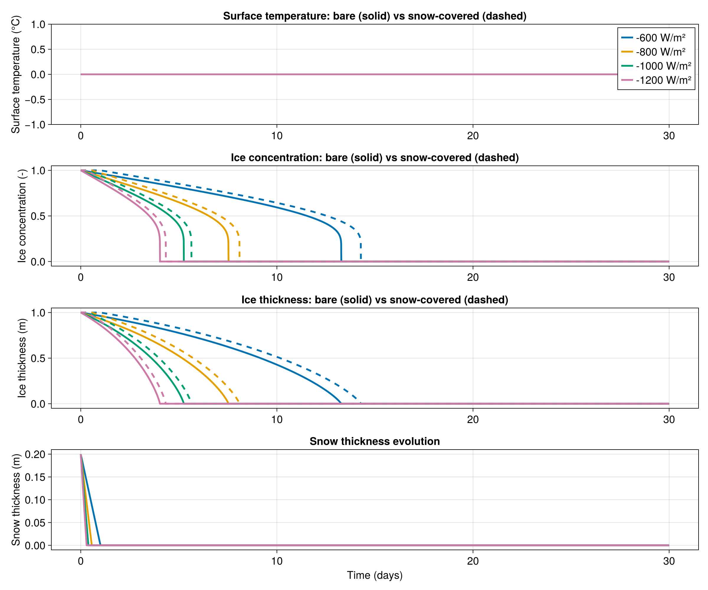

Melting in spring example
This example simulates the melting of relatively thick sea ice in spring when the sun is shining. We compare bare ice with snow-covered ice to show how snow insulation affects melt rates.
This example demonstrates how to:
- set up a one-dimensional model with multiple grid cells,
- prescribe spatially varying solar insolation,
- use
FluxFunctionfor parameterized heat fluxes, - add a snow layer with
snow_thermodynamics.
Install dependencies
First let's make sure we have all required packages installed.
using Pkg
pkg"add Oceananigans, ClimaSeaIce, CairoMakie"The physical domain
We generate a one-dimensional grid with 4 grid cells to model different ice columns subject to different solar insolation:
using Oceananigans
using Oceananigans.Units
using ClimaSeaIce
using ClimaSeaIce.SeaIceThermodynamics.HeatBoundaryConditions: RadiativeEmission
using CairoMakie
grid = RectilinearGrid(size=4, x=(0, 1), topology=(Periodic, Flat, Flat))4×1×1 RectilinearGrid{Float64, Periodic, Flat, Flat} on CPU with 3×0×0 halo
├── Periodic x ∈ [0.0, 1.0) regularly spaced with Δx=0.25
├── Flat y
└── Flat z Top boundary conditions
We prescribe different solar insolation values for each grid cell, ranging from -600 to -1200 W m⁻² (negative values indicate downward/into the ice):
solar_insolation = [-600, -800, -1000, -1200] # W m⁻²
solar_insolation = reshape(solar_insolation, (4, 1, 1))4×1×1 Array{Int64, 3}:
[:, :, 1] =
-600
-800
-1000
-1200The ice also emits longwave radiation from its top surface:
outgoing_radiation = RadiativeEmission()RadiativeEmission(emissivity = Float64, stefan_boltzmann_constant = Float64, reference_temperature = Float64)Sensible heat flux parameterization
The sensible heat flux from the atmosphere is represented by a FluxFunction. We define the parameters for the bulk formula:
parameters = (
transfer_coefficient = 1e-3, # unitless
atmosphere_density = 1.225, # kg m⁻³
atmosphere_heat_capacity = 1004, # J kg⁻¹ K⁻¹
atmosphere_temperature = -5, # °C
atmosphere_wind_speed = 5 # m s⁻¹
)(transfer_coefficient = 0.001, atmosphere_density = 1.225, atmosphere_heat_capacity = 1004, atmosphere_temperature = -5, atmosphere_wind_speed = 5)The flux is positive (cooling by fluxing heat upward away from the upper surface) when the atmosphere temperature is less than the surface temperature:
@inline function sensible_heat_flux(i, j, grid, Tu, clock, fields, parameters)
Cs = parameters.transfer_coefficient
ρa = parameters.atmosphere_density
ca = parameters.atmosphere_heat_capacity
Ta = parameters.atmosphere_temperature
ua = parameters.atmosphere_wind_speed
ℵ = fields.ℵ[i, j, 1]
return Cs * ρa * ca * ua * (Tu - Ta) * ℵ
end
aerodynamic_flux = FluxFunction(sensible_heat_flux; parameters)FluxFunction of sensible_heat_flux (generic function with 1 method) with parameters @NamedTuple{transfer_coefficient::Float64, atmosphere_density::Float64, atmosphere_heat_capacity::Int64, atmosphere_temperature::Int64, atmosphere_wind_speed::Int64}We combine all top heat fluxes into a tuple:
top_heat_flux = (outgoing_radiation, solar_insolation, aerodynamic_flux)(RadiativeEmission(emissivity = Float64, stefan_boltzmann_constant = Float64, reference_temperature = Float64), [-600; -800; -1000; -1200;;;], FluxFunction of sensible_heat_flux (generic function with 1 method) with parameters @NamedTuple{transfer_coefficient::Float64, atmosphere_density::Float64, atmosphere_heat_capacity::Int64, atmosphere_temperature::Int64, atmosphere_wind_speed::Int64})Building the bare-ice model
bare_ice_model = SeaIceModel(grid;
ice_consolidation_thickness = 0.05,
top_heat_flux)
set!(bare_ice_model, h=1, ℵ=1)Building the snow-covered model
We add a 20 cm layer of snow on top of the ice. Snow has a much lower thermal conductivity (~0.31 W/m/K) than ice (~2 W/m/K), so it acts as an insulating blanket that reduces the conductive flux through the slab.
snow_thermodynamics = snow_slab_thermodynamics(grid)
snowy_ice_model = SeaIceModel(grid;
ice_consolidation_thickness = 0.05,
top_heat_flux,
snow_thermodynamics)
set!(snowy_ice_model, h=1, ℵ=1, hs=0.2) # 20 cm of snow, no precipitationRunning both simulations
We run both for 30 days with a 10-minute time step, collecting time series for all four columns:
Δt = 10minute600.0Bare-ice simulation:
simulation_bare = Simulation(bare_ice_model, Δt=Δt, stop_time=30days)
series_bare = []
function accumulate_bare(sim)
T = sim.model.ice_thermodynamics.top_surface_temperature
h = sim.model.ice_thickness
ℵ = sim.model.ice_concentration
push!(series_bare, (time(sim),
h[1, 1, 1], ℵ[1, 1, 1], T[1, 1, 1],
h[2, 1, 1], ℵ[2, 1, 1], T[2, 1, 1],
h[3, 1, 1], ℵ[3, 1, 1], T[3, 1, 1],
h[4, 1, 1], ℵ[4, 1, 1], T[4, 1, 1]))
end
simulation_bare.callbacks[:save] = Callback(accumulate_bare)
run!(simulation_bare)[ Info: Initializing simulation...
[ Info: ... simulation initialization complete (215.062 ms)
[ Info: Executing initial time step...
[ Info: ... initial time step complete (690.046 ms).
[ Info: Simulation is stopping after running for 942.425 ms.
[ Info: Simulation time 30 days equals or exceeds stop time 30 days.Snow-covered simulation:
snowy_ice_simulation = Simulation(snowy_ice_model, Δt=Δt, stop_time=30days)
series_snow = []
function accumulate_snow(sim)
m = sim.model
Tu = m.snow_thermodynamics.top_surface_temperature
h = m.ice_thickness
ℵ = m.ice_concentration
hs = m.snow_thickness
push!(series_snow, (time(sim),
h[1, 1, 1], ℵ[1, 1, 1], Tu[1, 1, 1], hs[1, 1, 1],
h[2, 1, 1], ℵ[2, 1, 1], Tu[2, 1, 1], hs[2, 1, 1],
h[3, 1, 1], ℵ[3, 1, 1], Tu[3, 1, 1], hs[3, 1, 1],
h[4, 1, 1], ℵ[4, 1, 1], Tu[4, 1, 1], hs[4, 1, 1]))
end
snowy_ice_simulation.callbacks[:save] = Callback(accumulate_snow)
run!(snowy_ice_simulation)[ Info: Initializing simulation...
[ Info: ... simulation initialization complete (165.962 ms)
[ Info: Executing initial time step...
[ Info: ... initial time step complete (889.301 ms).
[ Info: Simulation is stopping after running for 1.783 seconds.
[ Info: Simulation time 30 days equals or exceeds stop time 30 days.Extracting the time series
t_bare = [d[1] for d in series_bare]
h_bare = [[d[3*(c-1)+2] for d in series_bare] for c in 1:4]
ℵ_bare = [[d[3*(c-1)+3] for d in series_bare] for c in 1:4]
T_bare = [[d[3*(c-1)+4] for d in series_bare] for c in 1:4]
t_snow = [d[1] for d in series_snow]
h_snow = [[d[4*(c-1)+2] for d in series_snow] for c in 1:4]
ℵ_snow = [[d[4*(c-1)+3] for d in series_snow] for c in 1:4]
T_snow = [[d[4*(c-1)+4] for d in series_snow] for c in 1:4]
hs_snow = [[d[4*(c-1)+5] for d in series_snow] for c in 1:4]4-element Vector{Vector{Float64}}:
[0.2, 0.19861940380610926, 0.19723880761221851, 0.19585821141832777, 0.19447761522443702, 0.19309701903054627, 0.19171642283665552, 0.19033582664276477, 0.18895523044887402, 0.18757463425498327 … 0.0, 0.0, 0.0, 0.0, 0.0, 0.0, 0.0, 0.0, 0.0, 0.0]
[0.2, 0.19753067217845546, 0.19506134435691092, 0.19259201653536637, 0.19012268871382182, 0.18765336089227727, 0.18518403307073272, 0.18271470524918818, 0.18024537742764363, 0.17777604960609908 … 0.0, 0.0, 0.0, 0.0, 0.0, 0.0, 0.0, 0.0, 0.0, 0.0]
[0.2, 0.1964419405508017, 0.19288388110160337, 0.18932582165240505, 0.18576776220320673, 0.1822097027540084, 0.1786516433048101, 0.17509358385561177, 0.17153552440641345, 0.16797746495721513 … 0.0, 0.0, 0.0, 0.0, 0.0, 0.0, 0.0, 0.0, 0.0, 0.0]
[0.2, 0.1953532089231479, 0.19070641784629577, 0.18605962676944365, 0.18141283569259153, 0.17676604461573941, 0.1721192535388873, 0.16747246246203518, 0.16282567138518306, 0.15817888030833094 … 0.0, 0.0, 0.0, 0.0, 0.0, 0.0, 0.0, 0.0, 0.0, 0.0]Visualizing the results
set_theme!(Theme(fontsize=18, linewidth=3))
fig = Figure(size=(1200, 1000))
colors = Makie.wong_colors()
labels = ["-600", "-800", "-1000", "-1200"]4-element Vector{String}:
"-600"
"-800"
"-1000"
"-1200"Surface temperature
axT = Axis(fig[1, 1], ylabel="Surface temperature (°C)",
title="Surface temperature: bare (solid) vs snow-covered (dashed)")
for c in 1:4
lines!(axT, t_bare ./ day, T_bare[c], color=colors[c], label=labels[c] * " W/m²")
lines!(axT, t_snow ./ day, T_snow[c], color=colors[c], linestyle=:dash)
end
axislegend(axT, position=:rt)Makie.Legend()Ice concentration
axℵ = Axis(fig[2, 1], ylabel="Ice concentration (-)",
title="Ice concentration: bare (solid) vs snow-covered (dashed)")
for c in 1:4
lines!(axℵ, t_bare ./ day, ℵ_bare[c], color=colors[c])
lines!(axℵ, t_snow ./ day, ℵ_snow[c], color=colors[c], linestyle=:dash)
endIce thickness
axh = Axis(fig[3, 1], ylabel="Ice thickness (m)",
title="Ice thickness: bare (solid) vs snow-covered (dashed)")
for c in 1:4
lines!(axh, t_bare ./ day, h_bare[c], color=colors[c])
lines!(axh, t_snow ./ day, h_snow[c], color=colors[c], linestyle=:dash)
endSnow thickness
axs = Axis(fig[4, 1], xlabel="Time (days)", ylabel="Snow thickness (m)",
title="Snow thickness evolution")
for c in 1:4
lines!(axs, t_snow ./ day, hs_snow[c], color=colors[c])
end
save("melting_in_spring.png", fig)
Key observations:
- Snow insulates: snow-covered ice melts more slowly because the low conductivity snow layer reduces the conductive flux.
- Snow melts first: the snow layer disappears before the ice starts melting significantly from the top.
- Warmer surface: the snow surface is warmer than bare ice because the same heat flux produces a larger temperature drop across the more insulating snow+ice slab.
This page was generated using Literate.jl.